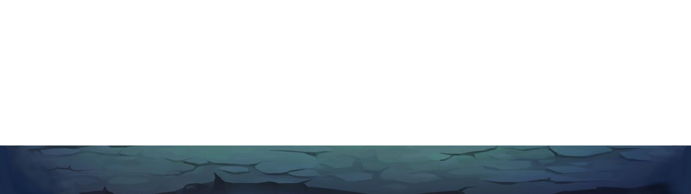
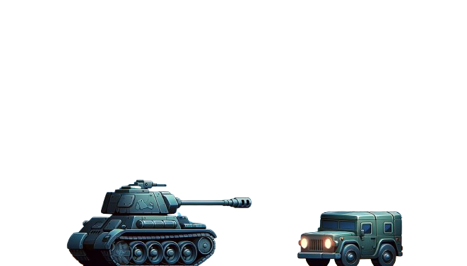
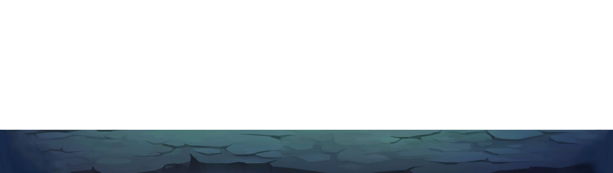
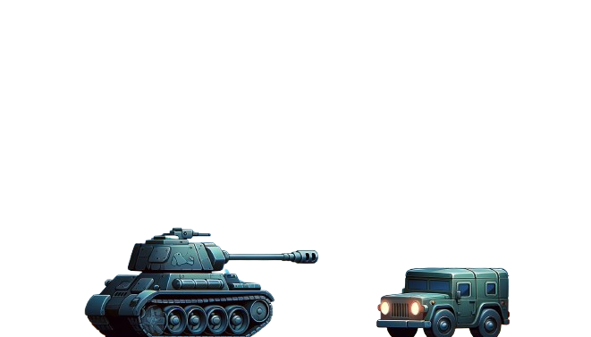

צוברי נגד העולם
בחירת שחקנים
המשחק מתחיל בכך שכל שחקן בוחר שחקן. לכל דמות יש חוזקה וחולשה ייחודית המשפיעות על המשחק
אלי
חוזקה: נמוך - קשה לפגיעה, כלומר לאוייבים קשה לפגוע באלי והיריב יתקשה יותר בלפגוע בו
חולשה: נשק קטן -קשה לפגוע באוייבים שונים וקשה יותר לפגוע בשחקן היריב
שי
חוזקה: נשק ענק - קל לפגוע באוייבים וקל יותר לפגוע בשחקן היריב
חולשה: גבוה - קל לפגיעה על ידי אוייבים וקל לשחקן היריב לפגוע בו
רון
חוזקה: חתיך אש - מהפנט את כולם מרוב יופיו
חולשה: נשק קטן - קשה לפגוע באוייבים שונים או בשחקן היריב
הכרטיסן המלך
חוזקה: נשק גדול - קל לפגוע באוייבים שונים ובשחקן היריב
חולשה: גבוה - קל לפגיעה על ידי אוייבים שונים ועל ידי השחקן היריב

אז איך משחקים?
המשחק מתחיל בכך שהמסך נסדק באמצע, ומפריד בין השחקנים ולא מאפשר להם לתקוף אחד את השני. שחקן 1 נמצא בצד שמאל של המסך, ושחקן 2 בצד ימין
מקשים בסיסיים:
- שחקן 1: זז למעלה (W), זז למטה (S), לירות (E)
- שחקן 2: זז למעלה (חץ למעלה), זז למטה (חץ למטה), לירות (ברווח)
המשחק הראשון
המשחק מחולק ל-2 משחקים שונים. הראשון נמשך 120 שניות. בכל שנייה, אויב חדש מופיע על המסך ורץ/ עף לכיוון כל אחד מהשחקנים (האויב יכול להיות שונה לכל שחקן: יפורט בהמשך). שחקנים צוברים נקודות על ידי הריגת אויבים. אם שחקן מתחמק מאויב, הוא לא יקבל נקודות אך גם לא יאבד נקודות אלא אם כן נפגע על ידי האויב (האויב הגיע אל מיקומו של השחקן).

לכל שחקן יש תחמושת ומספר מקסימאלי של כדורים, המוצגים עם מלבנים בפינה השמאלית העליונה של מסך השחקן (ראה תמונה).

אם אויב יתנגש בך, תאבד נקודות השוות לכמות החיים שנותרה לאויב (יפורט בחלק הבא).
אויבים:
איתי
איתי יכול להיות בשני מצבים: הליכה (על פני הקרקע) או ספיידרמן (מעל הקרקע). יש לו 2 חיים (כלומר לוקח 2 יריות כדי להיהרג) והוא נע במהירות בינונית, אך יכול להשתנות ברנדומאליות למהירות גבוהה יותר או נמוכה יותר. מופיע 50% מהזמן ונותן 2 נקודות כאשר נהרג.

אלכס
אלכס יכול להיות בשני מצבים: הליכה (על פני הקרקע) או סופרמן (מעל הקרקע). יש לו 4 חיים (כלומר לוקח 4 יריות כדי להיהרג) והוא נע במהירות בינונית, אך יכול להשתנות ברנדומאליות למהירות גבוהה יותר או נמוכה יותר. מופיע 38% מהזמן ונותן 4 נקודות כאשר נהרג.

יותם
יותם יכול להיות בשני מצבים: הליכה או תעופה. יש לו 3 חיים (כלומר לוקח 3 יריות כדי להיהרג) והוא נע במהירות בינונית, אך יכול להשתנות ברנדומאליות למהירות גבוהה יותר או נמוכה יותר. מופיע 10% מהזמן. יותם הוא אויב "המזל": כשהוא נהרג הוא נותן 15 נקודות. אך אם הוא מתנגש עם השחקן, השחקן נכנס למצב "כוח מיוחד" :במצב "כוח מיוחד" התחמושת של השחקן הופכת לצהובה והתחמושת המקסימלית שלו הופכת ל-50 כעת. התחמושת מתחדשת במהירויות מאוד מהירה וגם השחקן יורה פי שניים כדורים לכל ירייה (2 כדורים במקום אחד). המצב נמשך 10 שניות.

צוברי
צוברי יכול להיות רק במצב הליכה. יש לו 50 חיים (כלומר לוקח 50 יריות) והוא נע לאט מאוד. הוא יורה "תפסי קבע" לעבר השחקן, ומאלץ את השחקן להיכנס ל"קבע". כל פגיעה של תופס "קבע" מפחיתה את הניקוד של השחקן ב-5 נקודות. מופיע 2% מהזמן ונותן 50 נקודות כשהוא נהרג.

המשחק הסופי
אמרנו שהמשחק מחולק ל-2 חלקים. המשחק הראשון וכעט המשחק האחרון: לאחר 120 שניות, הסדק במסך נעלם, והשחקנים עוברים למשחק האחרון. שחקנים מתחילים עם 100 חיים ומקבלים/מפסידים 1 חיים על כל 2 נקודות שהיו להם במשחק הראשון. מינימום החיים הוא 10.

אירועים מיוחדים
כל 20 שניות מתחיל אירוע מיוחד. גבול המסך מואר בכחול. השחקן הראשון שלחץ על הכפתור שלו מפעיל את האירוע על השחקן היריב (השני). הכפתור של שחקן 1 הוא "G", והכפתור של שחקן 2 הוא "H".
אירוע ראשון: טנק צוברי
10 יריות אקראיות נורות מהטנק של צוברי לאזור השחקן המפסיד. כל זריקה שפוגעת בשחקן מפחיתה את החיים שלו ב-10. לשחקן ינתן פרק זמן מאוד קטן להתחמק מהיריות של צוברי

אירוע שני: צוברי הצדעה
השחקן המפסיד מוגבל בתנועותיו בשני מלבנים אדומים למשך 10 שניות בגלל שלא הצדיעה נכון במסדר של צוברי

מטוס צוברי
השחקן המפסיד מתחיל לקפוץ ללא שליטה שמאלה וימינה למשך 10 שניות ואינו יכול לירות או לבצע פעולות כלשהן מכיוון שצוברי שם עליו עין

סוף המשחק
השחקן שמאבד את כל החיים שלו מפסיד, והשחקן הנותר הוא המנצח.